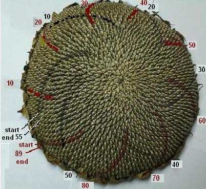

Mathematics in Nature/Chapter7
Aaron, Don's grandson, brought him a sunflower head cut from his garden; it was about a foot in diameter. The seeds grow in spiral arrays in 2 directions. See the photo below that Don took of the sunflower head, then added the numbers. Maddie, a 5th grader, with Don, counted the rows of seeds in the one direction going clockwise around the sunflower head (starting and ending in the lower left of the picture). They colored the starting or first row red and every 10th row red, to help keep track of the counting. The rows bend sometimes, not perfect spirals, which makes it a little difficult to count. Then Don and some other students finished counting those and the rows in the second direction, again going clockwise around the sunflower head, coloring the starting or first row black and every 10th row black.

There were 89 rows in the one direction and 55 rows in the other direction, both
Fibonacci numbers, including 1, 1, 2, 3, 5, 8, 13, 21, 34, 55, 89, 144, ... see the pattern?
See the sample problems from chapter 7 in Don's worksheet book and you'll find that Don has his students use the infinite sequence of the Fibonacci numbers to get the ratios of these. They are working with infinite sequences, ratios, fractions, mixed numbers, division, decimals, infinite repeating decimals and finding patterns. The infinite sequence of ratios has a limit which turns out to be The Golden Mean or The Divine Proportion, 1.618033... which equals (1+ Sqrt(5))/2.
Don's son Brian made a beautiful, wooden 3-D diorama for the story written by Don's granddaughter Tara, for her UNI HS geometry class, at age 15, entitled A Quest For The Sacred Golden Pineapple, Pine Cone and Artichoke. The diorama includes 1.) a figurine of The Old Mathman holding a golden pineapple, made by Tara, within a dome, 2.) a watercolor painting by Tara and Don of The Old Mathman's house in the woods, and 3). a shelf underneath with a copy of Tara's story.
See Cristobal Vila's beautiful short movie "Nature by Numbers" at http://www.etereaestudios.com/docs_html/nbyn_htm/intro.htm
See Xah Lee's site on curves- especially the equiangular spiral
See also Golden Triangle, Pentagon, Sunflower head , and The Golden Angle on the MAP
Geoffrey graphs the ratios of the Fibonacci numbers and writes a program to get the infinite sequence which has a limit.
Jamie an 8th grader, solved the quadratic equation x2 - x - 1 = 0, by iteration to get Phi, and he and Don wrote a program to do this on a TI-84 Plus.
Comparing the spirals of fibonacci numbers, the Nautilus shell, and The equal-tempered Musical scale
See also Dr. Ron Knott's great webite for much more on the Fibonacci numbers.
{kind=link}